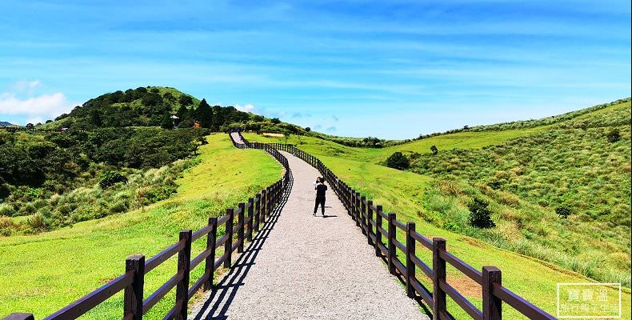
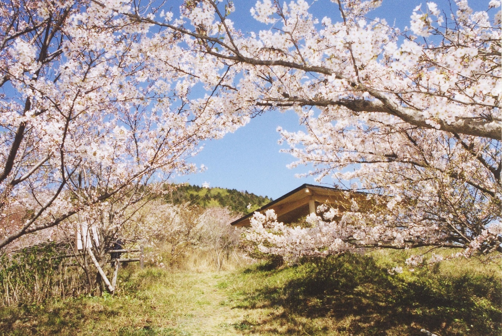

陽明山公園
原名中興賓館的「陽明書屋」，興建於民國58年至59年間，昔為先總統蔣公接待國內外貴賓及夏日避暑之處，係蔣公在台唯一親自擇定興建的行館；今日則成為陽明山國家公園重要人文史蹟建物之一，並提供遊客諮詢及導覽解說等各項服務，是一處兼具自然與人文、知性與感性的參觀遊憩場所。

草山公園
原名中興賓館的「陽明書屋」，興建於民國58年至59年間，昔為先總統蔣公接待國內外貴賓及夏日避暑之處，係蔣公在台唯一親自擇定興建的行館；今日則成為陽明山國家公園重要人文史蹟建物之一，並提供遊客諮詢及導覽解說等各項服務，是一處兼具自然與人文、知性與感性的參觀遊憩場所。
